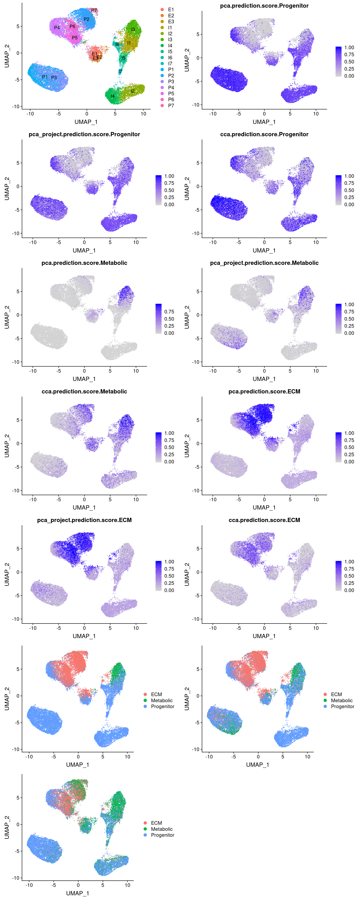

R Notebook
Last updated: 2020-01-25
Checks: 6 0
Knit directory: 10x-adipocyte-analysis/
This reproducible R Markdown analysis was created with workflowr (version 1.2.0). The Report tab describes the reproducibility checks that were applied when the results were created. The Past versions tab lists the development history.
Great! Since the R Markdown file has been committed to the Git repository, you know the exact version of the code that produced these results.
Great job! The global environment was empty. Objects defined in the global environment can affect the analysis in your R Markdown file in unknown ways. For reproduciblity it’s best to always run the code in an empty environment.
The command set.seed(20181026) was run prior to running the code in the R Markdown file. Setting a seed ensures that any results that rely on randomness, e.g. subsampling or permutations, are reproducible.
Great job! Recording the operating system, R version, and package versions is critical for reproducibility.
Nice! There were no cached chunks for this analysis, so you can be confident that you successfully produced the results during this run.
Great! You are using Git for version control. Tracking code development and connecting the code version to the results is critical for reproducibility. The version displayed above was the version of the Git repository at the time these results were generated.
Note that you need to be careful to ensure that all relevant files for the analysis have been committed to Git prior to generating the results (you can use wflow_publish or wflow_git_commit). workflowr only checks the R Markdown file, but you know if there are other scripts or data files that it depends on. Below is the status of the Git repository when the results were generated:
Ignored files:
Ignored: code/.Rhistory
Ignored: figures/
Ignored: output/bulk_analysis/
Ignored: output/demuxlet/
Ignored: output/harmony/
Ignored: output/markergenes/
Ignored: output/monocle/
Ignored: output/seurat_objects/
Ignored: output/velocyto/
Ignored: output/wgcna/
Ignored: tables/
Untracked files:
Untracked: .rstudio_old10/
Untracked: 10x-adipocyte-analysis-copy.Rproj
Untracked: analysis/.ipynb_checkpoints/10x-180831_harmony_palantir-checkpoint.ipynb
Untracked: analysis/.ipynb_checkpoints/velocyto_notebook_180831-checkpoint.ipynb
Untracked: analysis/10x-180831-modified_GOBubble.Rmd
Untracked: code/BEAM-heatmaps.R
Untracked: code/BEAM_gsea.R
Untracked: code/__pycache__/
Untracked: code/colors.R
Untracked: code/convert_raw_data_to_csv_harmony.R
Untracked: code/harmony.py
Untracked: code/test.csv
Untracked: docs/figure/10x-180831-modified_GOBubble.Rmd/
Unstaged changes:
Deleted: 10x-adipocyte-analysis.Rproj
Modified: analysis/10x-180831-figures.Rmd
Modified: analysis/index.Rmd
Deleted: analysis/velocyto_notebook_180504.ipynb
Deleted: analysis/velocyto_notebook_180831.ipynb
Deleted: code/REMOVE/find-brown-sample-markers-180504-REMOVE.R
Deleted: code/REMOVE/find-white-sample-markers-180504-REMOVE.R
Deleted: code/REMOVE/get-genes-monocle-180831-REMOVE.R
Modified: code/compute-genelists-monocle-depots.R
Modified: code/find-depot-markers-180504.R
Modified: code/find-markers.R
Modified: code/preprocess-data.R
Modified: code/run-alignment.R
Modified: code/run-monocle.R
Modified: code/velocyto_preprocess.py
Note that any generated files, e.g. HTML, png, CSS, etc., are not included in this status report because it is ok for generated content to have uncommitted changes.
These are the previous versions of the R Markdown and HTML files. If you’ve configured a remote Git repository (see ?wflow_git_remote), click on the hyperlinks in the table below to view them.
| File | Version | Author | Date | Message |
|---|---|---|---|---|
| Rmd | adae7b7 | Pytrik Folkertsma | 2020-01-23 | vijay analysis branch markers |
library(Seurat)
library(dplyr)
library(tibble)
library(cowplot)
library(DT)Data loading and processing
# file.data <- "/nfsdata/projects/timshel/sc-scheele_lab_adipose_fluidigm_c1/data-vijay/GSE129363_SVF_Normalised_Data.txt.gz"
# df.data <- read_tsv(file.data) %>% rename(gene=X1)# WORKS and parsed correctly. Warning message: Missing column names filled in: 'X1' [1]
# df.data <- data.table::fread(file.data, nThread=24, showProgress=T)
# df.data <- df.data %>% column_to_rownames(var="V1")
#
# ### Meta-data
# file.metadata <- "/nfsdata/projects/timshel/sc-scheele_lab_adipose_fluidigm_c1/data-vijay/GSE129363_cell_metadata.txt.gz"
# df.metadata <- read_tsv(file.metadata)
# df.metadata <- df.metadata %>% rename(cell_barcode=X1, diabetes=Condition, depot=Tissue, celltype=ClsID)
# # *TODO*: rename IA-->visc; SC-->subq
# df.metadata <- df.metadata %>% column_to_rownames(var="cell_barcode")
#
# ### Create object
# vijay <- CreateSeuratObject(counts=df.data, meta.data=df.metadata, project="vijay") # Warning: Feature names cannot have underscores ('_'), replacing with dashes ('-')
# vijay[["RNA"]]@data <- vijay[["RNA"]]@counts # copy slot because data is already normalized
# # NB: do not perform further (log)normalization as this has already been done
#
# vijay <- ScaleData(vijay)
# vijay <- FindVariableFeatures(vijay)
# vijay <- RunPCA(vijay)
# #ElbowPlot(vijay, reduction='pca')
# vijay <- RunTSNE(vijay, dims=1:11)
# vijay <- RunUMAP(vijay, dims=1:11)
# saveRDS(vijay, 'output/seurat_objects/vijay/vijay.rds')vijay <- readRDS('output/seurat_objects/vijay/vijay.rds')#Metadata plots
#plot cell types + overlayed with meta data
plot_grid(
UMAPPlot(vijay, group.by='celltype', label=T),
UMAPPlot(vijay, group.by='depot'),
UMAPPlot(vijay, group.by='diabetes')
)#plot cell types + overlayed with meta data
plot_grid(
FeaturePlot(vijay, features='nFeature_RNA'),
FeaturePlot(vijay, features='nCount_RNA')
)#U/L branch marker genes
Plot the U and L branch marker genes.
data_180831 <- readRDS('output/seurat_objects/180831/10x-180831-S3')
#DE genes between T1T2T3 and T4T5 in the 10x-180831 data.
markers_u_l <- read.table('output/markergenes/180831/markers_10x-180831_upperbranch_lowerbranch_negbinom', sep='\t', header=T)
markers_u <- markers_u_l[order(-markers_u_l$avg_logFC),]
markers_l <- markers_u_l[order(markers_u_l$avg_logFC),]How do these genes look in the 180831 data?
plots <- FeaturePlot(data_180831, features=c(as.vector(markers_u$gene)[1:10], as.vector(markers_l$gene)[1:10]), pt.size=1, combine=F)
plot_grid(plotlist=plots, ncol=4)And how are they expressed in the Vijay data?
UMAPPlot(vijay, group.by='celltype', label=T)
plots <- FeaturePlot(vijay, features=c(as.vector(markers_u$gene)[1:10], as.vector(markers_l$gene)[1:10]), pt.size=1, combine=F)Warning in FetchData(object = object, vars = c(dims, "ident", features), :
The following requested variables were not found: RP11-572C15.6plot_grid(plotlist=plots, ncol=2)Some U branch markers are not really expressed (SCD, PLIN4, GDP1, RBP4). Interestingly most U branch markers are also expressed in I1 and I3 and E1-E3.
#Seurat integration with 10x-180831 data
#anchors <- FindIntegrationAnchors(object.list = list(vijay, data_180831), dims = 1:20)
#integrated <- IntegrateData(anchorset = anchors, dims = 1:20)
#integrated <- ScaleData(integrated, verbose = FALSE)
#integrated <- RunPCA(integrated, npcs = 30, verbose = FALSE)
#integrated <- RunUMAP(integrated, reduction = "pca", dims = 1:10)
#integrated <- RunTSNE(integrated, reduction = "pca", dims = 1:10)
#saveRDS(integrated, '/projects/pytrik/sc_adipose/analyze_10x_fluidigm/10x-adipocyte-analysis/output/seurat_objects/vijay/vijay.180831.integrated.rds')
integrated <- readRDS('output/seurat_objects/vijay/vijay.180831.integrated.rds')
integrated@meta.data['dataset'] <- '10x-180831'
integrated@meta.data[which(is.na(integrated@meta.data$branch)), 'dataset'] <- 'Vijay'
plot_grid(
UMAPPlot(integrated, group.by='dataset'),
UMAPPlot(integrated, group.by='celltype', label=T),
UMAPPlot(integrated, group.by='branch'), ncol=2
)Structural cells overlap with clusters P4, P5, P6, P2, P7. Metabolic cells overlap partly with P2 and P7 and also I3.
#Predict cell types from 10x-180831 data
#find anchors
anchors <- FindTransferAnchors(reference = data_180831, query = vijay, dims = 1:20)Performing PCA on the provided reference using 583 features as input.Projecting PCAFinding neighborhoodsFinding anchors Found 4975 anchorsFiltering anchors Retained 903 anchorsExtracting within-dataset neighborsanchors_cca <- FindTransferAnchors(reference = data_180831, query = vijay, dims = 1:20, reduction = 'cca')Running CCAMerging objectsFinding neighborhoodsFinding anchors Found 50710 anchorsFiltering anchors Retained 3050 anchorsExtracting within-dataset neighbors#transfer labels
predictions_pca_project <- TransferData(anchors, data_180831$branch, dims = 1:20, weight.reduction='pcaproject')Finding integration vectorsFinding integration vector weightsPredicting cell labelspredictions_pca <- TransferData(anchors, data_180831$branch, dims=1:20, weight.reduction='pca')Running PCA on query datasetFinding integration vectorsFinding integration vector weightsPredicting cell labelspredictions_cca <- TransferData(anchors_cca, data_180831$branch, dims=1:20, weight.reduction='cca')Finding integration vectorsFinding integration vector weightsPredicting cell labels#rename colnames
names(predictions_pca_project) <- unlist(lapply(names(predictions_pca_project), function(x){return(paste('pca_project.', x, sep=''))}))
names(predictions_pca) <- unlist(lapply(names(predictions_pca), function(x){return(paste('pca.', x, sep=''))}))
names(predictions_cca) <- unlist(lapply(names(predictions_cca), function(x){return(paste('cca.', x, sep=''))}))
vijay <- AddMetaData(vijay, metadata = predictions_pca_project)
vijay <- AddMetaData(vijay, metadata = predictions_pca)
vijay <- AddMetaData(vijay, metadata = predictions_cca)Scores
plot_grid(
UMAPPlot(vijay, group.by='celltype', label=T),
FeaturePlot(vijay, features='pca.prediction.score.Progenitor'),
FeaturePlot(vijay, features='pca_project.prediction.score.Progenitor'),
FeaturePlot(vijay, features='cca.prediction.score.Progenitor'),
FeaturePlot(vijay, features='pca.prediction.score.Metabolic'),
FeaturePlot(vijay, features='pca_project.prediction.score.Metabolic'),
FeaturePlot(vijay, features='cca.prediction.score.Metabolic'),
FeaturePlot(vijay, features='pca.prediction.score.ECM'),
FeaturePlot(vijay, features='pca_project.prediction.score.ECM'),
FeaturePlot(vijay, features='cca.prediction.score.ECM'),
UMAPPlot(vijay, group.by='pca.predicted.id'),
UMAPPlot(vijay, group.by='pca_project.predicted.id'),
UMAPPlot(vijay, group.by='cca.predicted.id'),
ncol=2
)
Assign the labels if threshold is above 0.7 (same threshold as the wolfrum label transfer).
assign_labels <- function(colname, threshold=0.7){
pred_ids <- unlist(as.vector(apply(vijay@meta.data[,c(paste(colname,'.prediction.score.max', sep=''), paste(colname, '.predicted.id', sep=''))], 1, function(x){
if (x[[1]] < threshold){
return(NA)
} else{
return(x[[2]])
}
})))
return(pred_ids)
}
for (col in c('pca_project', 'pca', 'cca')){
for (t in c(0.5, 0.7, 0.9, 0.95, 0.99)){
preds <- assign_labels(col, t)
vijay <- AddMetaData(vijay, preds, col.name=paste(col, 'predicted_label', t, sep='.'))
}
}Threshold for prediction = 0.5
plot_grid(
UMAPPlot(vijay, group.by='pca.predicted_label.0.5'),
UMAPPlot(vijay, group.by='pca_project.predicted_label.0.5'),
UMAPPlot(vijay, group.by='cca.predicted_label.0.5'), ncol=2
)Threshold for prediction = 0.7
plot_grid(
UMAPPlot(vijay, group.by='pca.predicted_label.0.7'),
UMAPPlot(vijay, group.by='pca_project.predicted_label.0.7'),
UMAPPlot(vijay, group.by='cca.predicted_label.0.7'), ncol=2
)Threshold for prediction = 0.9
plot_grid(
UMAPPlot(vijay, group.by='pca.predicted_label.0.9'),
UMAPPlot(vijay, group.by='pca_project.predicted_label.0.9'),
UMAPPlot(vijay, group.by='cca.predicted_label.0.9'), ncol=2
)I3 = adipose tissue macrophages (Vijay paper). Perhaps no metabolic preadipocytes because of maturation?
UMAPPlot(vijay, group.by='celltype', label=T)
sessionInfo()R version 3.5.3 (2019-03-11)
Platform: x86_64-pc-linux-gnu (64-bit)
Running under: Storage
Matrix products: default
BLAS/LAPACK: /usr/lib64/libopenblas-r0.3.3.so
locale:
[1] LC_CTYPE=en_US.UTF-8 LC_NUMERIC=C
[3] LC_TIME=en_US.UTF-8 LC_COLLATE=en_US.UTF-8
[5] LC_MONETARY=en_US.UTF-8 LC_MESSAGES=en_US.UTF-8
[7] LC_PAPER=en_US.UTF-8 LC_NAME=C
[9] LC_ADDRESS=C LC_TELEPHONE=C
[11] LC_MEASUREMENT=en_US.UTF-8 LC_IDENTIFICATION=C
attached base packages:
[1] stats graphics grDevices utils datasets methods base
other attached packages:
[1] DT_0.9 cowplot_0.9.4 ggplot2_3.1.0 tibble_2.1.1 dplyr_0.8.0.1
[6] Seurat_3.1.1
loaded via a namespace (and not attached):
[1] tsne_0.1-3 nlme_3.1-140 bitops_1.0-6
[4] fs_1.2.7 RcppAnnoy_0.0.13 RColorBrewer_1.1-2
[7] httr_1.4.0 rprojroot_1.3-2 sctransform_0.2.0
[10] tools_3.5.3 backports_1.1.3 R6_2.4.0
[13] irlba_2.3.3 KernSmooth_2.23-15 uwot_0.1.4
[16] lazyeval_0.2.2 colorspace_1.4-1 withr_2.1.2
[19] npsurv_0.4-0 gridExtra_2.3 tidyselect_0.2.5
[22] compiler_3.5.3 git2r_0.25.2 plotly_4.8.0
[25] labeling_0.3 caTools_1.17.1.2 scales_1.0.0
[28] lmtest_0.9-36 ggridges_0.5.1 pbapply_1.4-0
[31] stringr_1.4.0 digest_0.6.18 rmarkdown_1.12
[34] R.utils_2.8.0 pkgconfig_2.0.2 htmltools_0.3.6
[37] bibtex_0.4.2 htmlwidgets_1.3 rlang_0.3.2
[40] zoo_1.8-5 jsonlite_1.6 ica_1.0-2
[43] gtools_3.8.1 R.oo_1.22.0 magrittr_1.5
[46] Matrix_1.2-17 Rcpp_1.0.1 munsell_0.5.0
[49] ape_5.3 reticulate_1.11.1 R.methodsS3_1.7.1
[52] stringi_1.4.3 whisker_0.3-2 yaml_2.2.0
[55] gbRd_0.4-11 MASS_7.3-51.4 gplots_3.0.1.1
[58] Rtsne_0.15 plyr_1.8.4 grid_3.5.3
[61] parallel_3.5.3 gdata_2.18.0 listenv_0.7.0
[64] ggrepel_0.8.0 crayon_1.3.4 lattice_0.20-38
[67] splines_3.5.3 SDMTools_1.1-221 knitr_1.22
[70] pillar_1.3.1 igraph_1.2.4 reshape2_1.4.3
[73] future.apply_1.3.0 codetools_0.2-16 leiden_0.3.1
[76] glue_1.3.1 evaluate_0.13 lsei_1.2-0
[79] metap_1.1 RcppParallel_4.4.4 data.table_1.12.0
[82] png_0.1-7 Rdpack_0.10-1 gtable_0.3.0
[85] RANN_2.6.1 purrr_0.3.2 tidyr_0.8.3
[88] future_1.15.0 assertthat_0.2.1 xfun_0.5
[91] rsvd_1.0.2 survival_2.43-3 viridisLite_0.3.0
[94] workflowr_1.2.0 cluster_2.1.0 globals_0.12.4
[97] fitdistrplus_1.0-14 ROCR_1.0-7